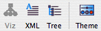
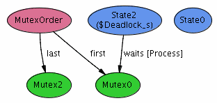
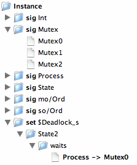
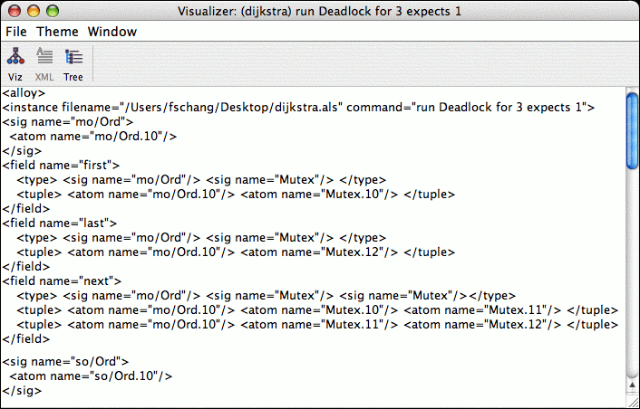

Visualizer
The visualizer offers 3 views, which can be selected
in its toolbar at the top (see the figure below).

Visualization Modes
- Viz: brings up the graphical view.
The labels, colors, and various other settings can be configured
by clicking the Theme button.

- Tree: brings up the tree view.

- XML: shows the instance as an XML document.
